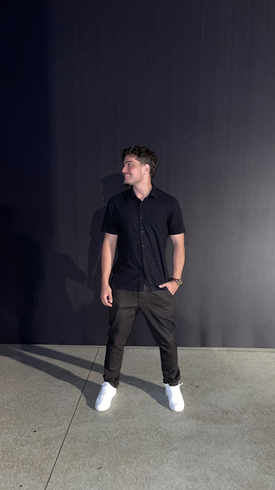

Estudante de Engenharia de Software - CEUB
Olá! Sou acadêmico de Engenharia de Software no CEUB. Tenho foco em desenvolvimento com Python, com formação completa pela plataforma Curso em Vídeo, e atualmente aprimoro minha proficiência em inglês através de curso especializado em línguas. Além da graduação, dedico-me ao estudo para concursos e ao aprimoramento constante em lógica de programação. Busco oportunidades para aplicar meus conhecimentos técnicos em projetos desafiadores e colaborar com equipes inovadoras.
Formação: Bacharelado em Engenharia de Software - CEUB (Em andamento).
Habilidades Técnicas: Python (Avançado), Lógica de Programação, Versionamento com Git/GitHub.
Idiomas: Português (Nativo) e Inglês (Em curso).
Certificações: Python 3 Mundo 1, 2 e 3 - Curso em Vídeo.
Abaixo, você pode acessar meu repositório central de estudos, onde documento minha evolução em Python e outras tecnologias[cite: 20, 22]:
Ver Repositório de Estudos (GitHub)Confira minha apresentação visual de competências e conquistas[cite: 23, 24]:
Ver Apresentação no Canva"O Arthur mostrou bastante empenho na construção e apresentação do trabalho, sempre tendo uma ideia positiva e colaborando com o grupo. Na apresentação teve boa comunicação e apresentou um ótimo domínio do conteúdo sem deixar de explicar os principais pontos com clareza." — Isaac Soares, Colega de Engenharia de Software [cite: 28]